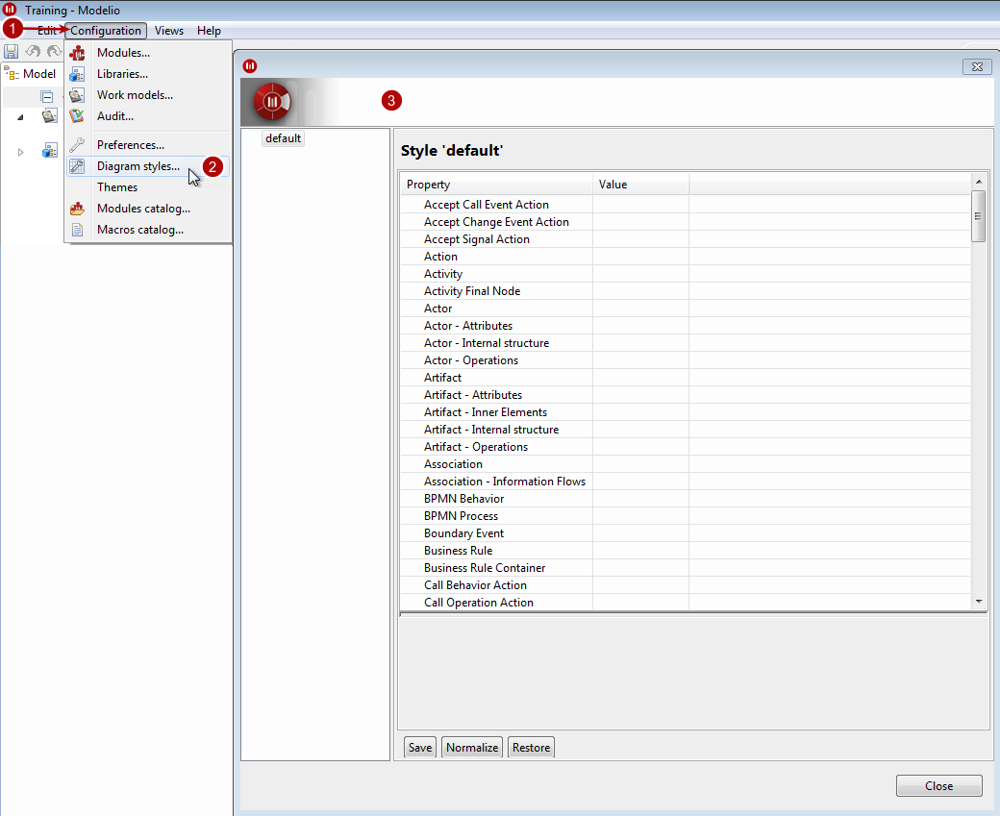
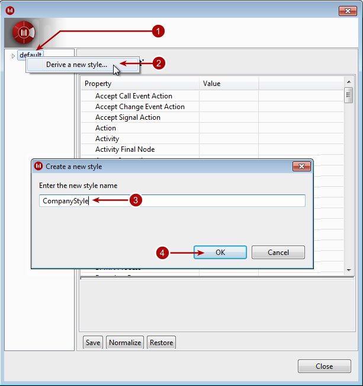
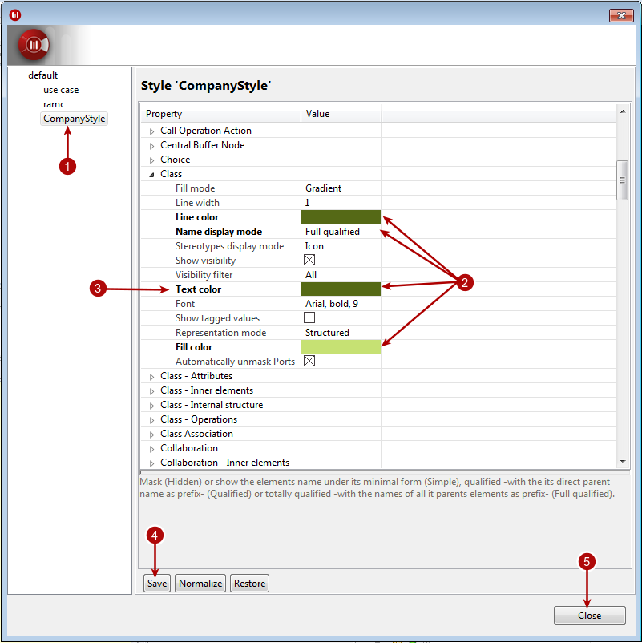
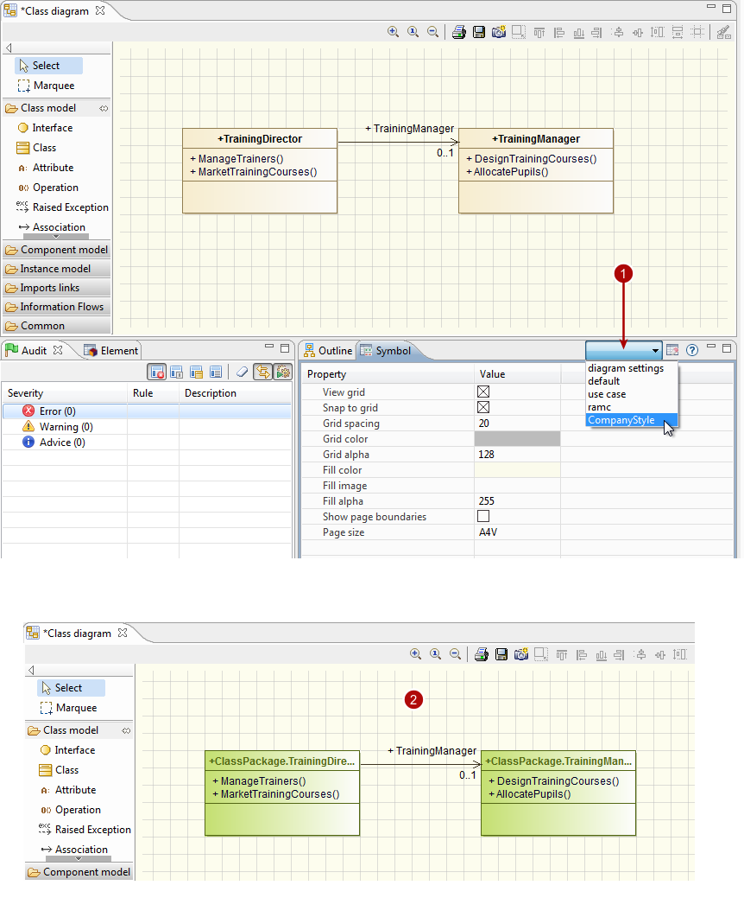

Modeler- modeler modelio settings diagram styles¶
Creating your own diagram style¶
Modelio lets you create your own diagram style.
To create your own diagram style, simply carry out the steps shown in the screenshots below:
Firstly, open the diagram styles window.

Opening the diagram styles window¶
Steps:
- Click on the “Configuration” menu in the menubar.
- Now click on “Diagram styles…”.
- The diagram styles window opens.
Create a new style.

Creating a new diagram style¶
Steps:
- Right-click on the “Default” style.
- Click on “Derive a new style…”.
- Enter a name for the new style.
- Click on “OK” to complete the style creation.
Now make the necessary changes to the new style.

Making changes in the newly created style¶
Steps:
- Select the new style.
- Make your changes in the style properties.
- The modified properties appear in bold text.
- Click on “Save” to save your new style and deploy it in your project.
- Click on “Close” to exit the diagram styles window.
Note: Diagram styles are saved as “StyleName.style” files in the “.config/styles” directory from your project space.
Finally, apply your new style to new or existing diagrams.

Applying the new style to an existing diagram¶
Steps:
- In the Symbol view toolbar, click on the diagram style dropdown list and choose your style.
- The style is applied to the diagram.